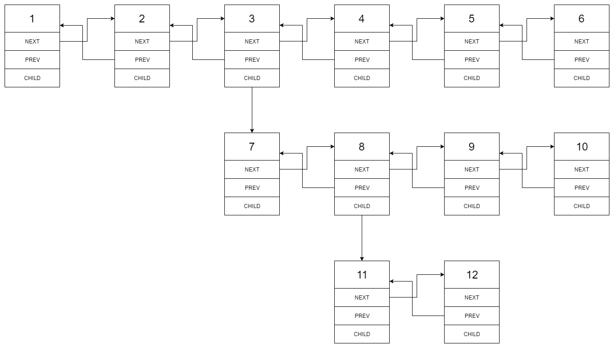

Flatten a Multilevel Doubly Linked List
Jun 27, 2018
展平多层双向链表
You are given a doubly linked list which in addition to the next and previous pointers, it could have a child pointer, which may or may not point to a separate doubly linked list. These child lists may have one or more children of their own, and so on, to produce a multilevel data structure, as shown in the example below.
Flatten the list so that all the nodes appear in a single-level, doubly linked list. You are given the head of the first level of the list.
Example:
1 | Input: |
Given the following multilevel doubly linked list:

We should return the following flattened doubly linked list:
Solution
1 | const flatten = function(head) { |